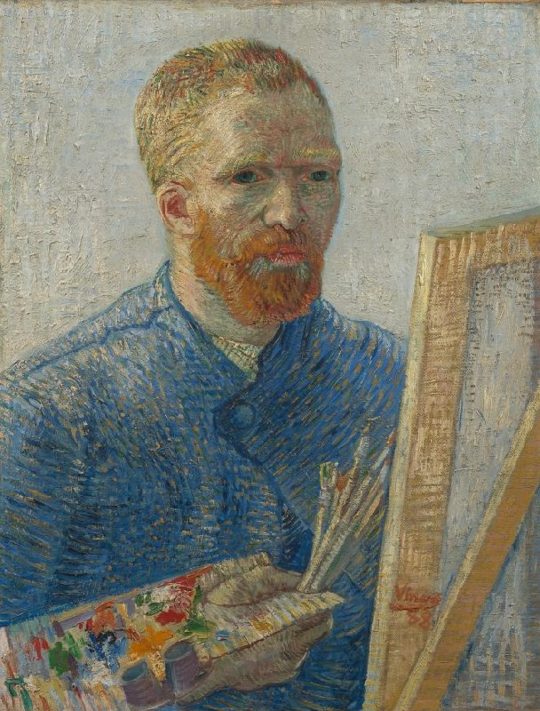

Self-Portarit as a Painter
Self-Portrait as a Painter was painted oil on canvas by Vincent van Gogh in December 1887 - Feburary 1888 while he was in Paris. This was his final self-portrait from his Paris period, showcasing his transition to a more vibrant and expressive style. The painting shows Van Gogh wearing a smock, holding a palette and brushes, emphasising his identity as an artist.
Back to Paintings